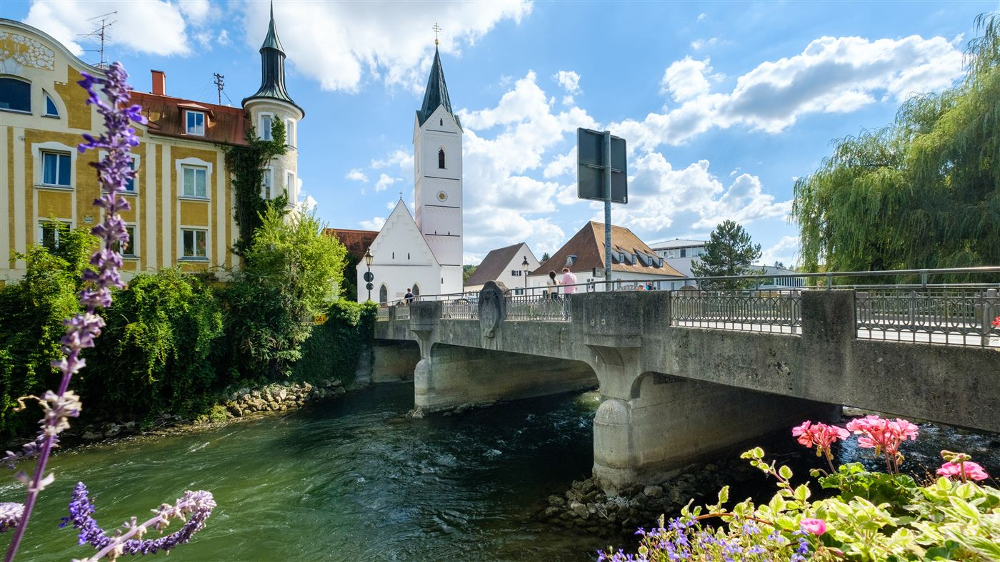
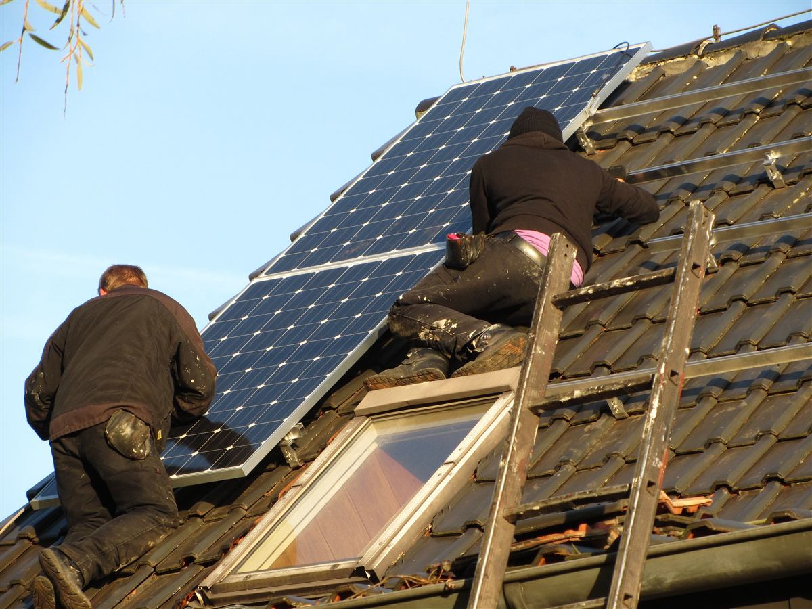
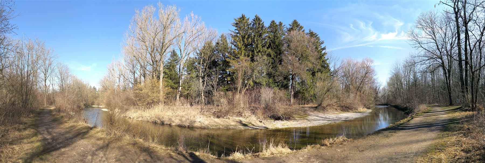
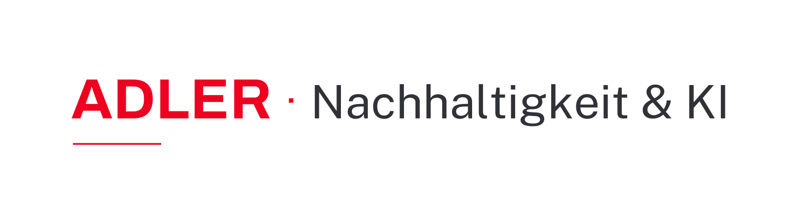

Eine Auswertung der wichtigsten Kennzahlen aus den Nachhaltigkeitsberichten der Sparkasse Fürstenfeldbruck – Bilanz, ökologischer Fußabdruck, Team und regionales Engagement, Jahr für Jahr vergleichbar über den Umschalter oben.
„Wir machen Ihr Leben einfach … besser.“Purpose der Sparkasse Fürstenfeldbruck, entwickelt im Kulturprojekt mit den Werten Kundenorientierung, Wertschätzung, Vertrauen, Team Sparkasse und Ownership.
Anstalt öffentlichen Rechts, getragen vom Zweckverband Kreis- und Stadtsparkasse Fürstenfeldbruck – je zur Hälfte von Landkreis und Stadt.

Alle vier zentralen Bilanzgrößen sind 2025 gegenüber dem Vorjahr gewachsen.
Rang 2 von 42 bayerischen Sparkassen (2024) – der Score wird erst seit 2021 systematisch ausgewiesen
Score fast verdreifacht seit 2021 – 0,80 → 2,26, Zielwert 2025: 2,5. Für 2022/2023 nennen die Berichte nur die Methodik, keinen Zahlenwert.
Anteil taxonomiekonformer Vermögenswerte, 2025 vs. 2024
283 Förderkredite 2025 über 40,7 Mio. € vermittelt – davon 2,4 Mio. € für Erneuerbare Energien, 2,7 Mio. € für Energieeinsparung.
Ziel: CO₂-Neutralität im Geschäftsbetrieb bis 2035. Alle Berichte weisen den Weg über 100 % Ökostrom.

kg pro Jahr, 2021–2025 (unverändert über alle Berichtsjahre)
−47 % seit 2021 (−68 % seit 2015: 29.600 kg).
kWh pro Jahr, 2017–2025 (unverändert über alle Berichtsjahre)
Verlauf schwankt Jahr für Jahr (2024 z. B. leichter Anstieg), seit 2017 aber −35 % im Trend.
m³ pro Jahr, 2017–2025 (unverändert über alle Berichtsjahre)
Rückgang v. a. durch Reduzierung der Standorte; schwankt jährlich (2023: Anstieg).
kg CO₂ pro Jahr
−97 % – nahezu vollständige Umstellung auf Ökostrom.
kg CO₂ pro Jahr
−3,5 % ggü. Vorjahr, größter Emissionsposten im Haus.
kg CO₂ pro Jahr
−14 % durch Umstieg auf Hybrid- & E-Fahrzeuge.
Strom und Wärme sind beide eingekaufte Energie und zählen daher zu Scope 2; Fuhrpark zu Scope 1 (direkte Emissionen). Scope 3 (sonstige indirekte Emissionen, z. B. Lieferkette) wird in keinem der Berichte 2022–2025 ermittelt – der Erhebungsaufwand übersteigt nach Angaben der Sparkasse aktuell die Möglichkeiten als Einzelinstitut.
633 Mitarbeitende, davon 62 Auszubildende – einer der größten Ausbildungsbetriebe der Region.
Auszubildende
Kontrollorgan (Verwaltungsrat): 87,5 % männlich / 12,5 % weiblich, 100 % über 50 Jahre – über alle Berichtsjahre 2022–2025 unverändert.
dokumentierbare Arbeitsunfälle (0 Todesfälle)
Diskriminierungsvorfälle
nutzen familienfreundliche Teilzeitmodelle
Mitarbeitende in Elternzeit
451 Institutionen und Initiativen im Landkreis wurden 2025 finanziell unterstützt.

Anfragen im Berichtsjahr
Über alle Berichtsjahre 2022–2025 hinweg: geprüft durch interne Revision und die Prüfungsstelle des Sparkassenverbands Bayern.
Kennzahlen aus den DNK-Erklärungen 2022–2025 nebeneinander – k. A., wo ein Bericht den Wert nicht ausweist.
* Für 2022 weist der Bericht noch keine Green Asset Ratio aus (erst ab Berichtsjahr 2023 verpflichtend) – stattdessen wird eine Taxonomiefähigkeit von 31,34 % (zzgl. 29,57 % freiwillig) genannt, siehe Abschnitt „Wirtschaft" im Jahr 2022 oben.
